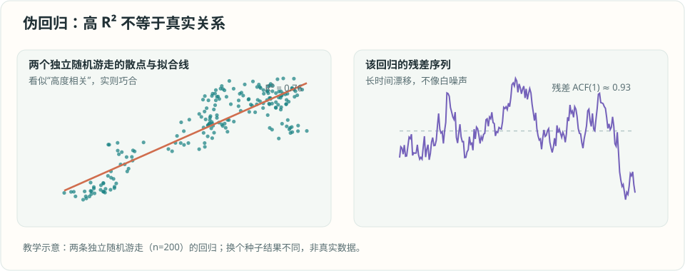
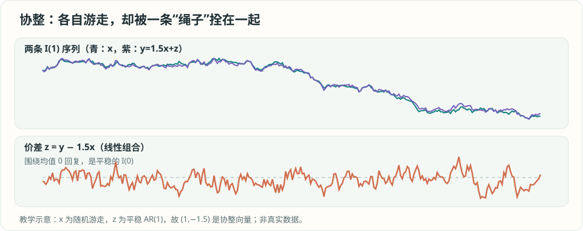
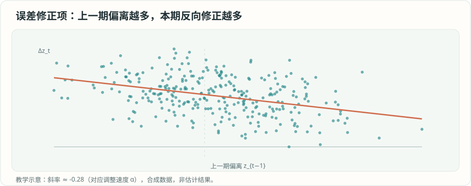

CHAPTER 17 / 28 · MULTIVARIATE
协整与误差修正模型
两个各自随机游走的序列，可能被一条长期均衡“拴”在一起。本章讲清伪回归、协整向量、Engle–Granger 与 Johansen 检验，以及 VECM 如何把长期均衡与短期动态放进同一个模型。
第 16 章的 VAR 假设变量平稳。但很多经济变量是 I(1)：单独看找不到稳定均值。直接对它们做回归会掉进伪回归；直接差分又会丢掉它们的长期关系。协整正是这两难之间的出路。
先纠正一个误解：“两个变量协整”不等于“其中一个导致另一个”。协整只描述存在一个平稳的线性组合，方向性需要额外假设与检验才能讨论。
01 · 伪回归
Granger 与 Newbold（1974）用相互独立的随机游走做回归，发现传统 t 检验会以远高于名义水平（约 3/4）的比例“显著”。原因是两边都含随机趋势，OLS 会把共同的漂移当成关系，而残差不平稳。

判据不是“R² 高不高”，而是残差是否平稳。这正是协整检验要做的事。
02 · 协整的定义
若 xₜ 与 yₜ 都是 I(1)，但存在系数 β（与常数项）使线性组合平稳，则称它们协整，该组合称为协整关系。
类比“遛狗”：人与狗各自走动，但狗绳让它们的距离围绕某个均值波动，不会无限拉开。注意这是长期性质，短期偏离仍可能很大。
03 · Engle–Granger 两步法
第一步用 OLS 估计长期关系 yₜ=α+βxₜ+eₜ 并取残差 êₜ；第二步对 êₜ 做单位根检验。若拒绝单位根（残差平稳），则存在协整。
关键细节：第二步的临界值不能用普通 ADF 表，因为残差是从第一步估计得来的（生成的回归量），需要 Engle–Granger 专用临界值。statsmodels 的 coint() 会直接返回带正确临界值的结论，而直接对残差调 adfuller 会低估显著性。该方法的局限是只能处理一个协整关系与两变量情形。
04 · Johansen 检验与协整秩
Johansen 检验在 VAR 框架下估计协整秩 r（独立协整关系的个数），能处理多变量与多个协整关系。它提供两种互补统计量。
| 统计量 | 原假设 | 备择假设 |
|---|---|---|
| 迹检验（trace） | 协整秩 ≤ r | 协整秩 > r |
| 最大特征值检验 | 协整秩 = r | 协整秩 = r+1 |
两种检验给出不一致的结论并不罕见，尤其是在秩接近边界时。不能只看单个 p 值就宣布协整秩，应结合经济含义与滞后阶数选择。
05 · VECM：误差修正
当确认协整后，VAR 的差分形式会多出一个“误差修正项”：上一期偏离均衡越远，本期反向修正越多。这个模型就是向量误差修正模型（VECM）。

z=y−1.5x 围绕均值回复，是平稳的 I(0)。“各自非平稳、组合平稳”就是协整。图为合成数据的教学示意。
Δzₜ 对上一期偏离 z_{t−1} 做散点：拟合线斜率为负，即“偏离越大、本期反向修正越多”，斜率大小对应调整速度 α。图为合成数据的教学示意，非估计结果。VECM 把长期均衡与短期动态统一在一起：既不像直接差分那样丢掉长期信息，也不像原水平回归那样可能伪回归。
06 · Python：协整检验与 VECM
下面生成一对已知协整的序列（y=1.5x+z，x 为随机游走，z 为平稳 AR(1)），用 coint 做 Engle–Granger 检验，用 Johansen 估计秩，再拟合 VECM 看调整速度。只依赖 numpy 与 statsmodels。
import numpy as np
from statsmodels.tsa.stattools import coint
from statsmodels.tsa.vector_ar.vecm import VECM, coint_johansen
rng = np.random.default_rng(17)
n = 400
x = np.cumsum(rng.standard_normal(n)) # I(1)
z = np.zeros(n)
for t in range(1, n):
z[t] = 0.75 * z[t-1] + rng.standard_normal() # I(0)
y = 1.5 * x + z # 与 x 协整
print("Engle-Granger p:", coint(y, x)[1]) # 期望很小
j = coint_johansen(np.column_stack([y, x]), det_order=0, k_ar_diff=1)
print("迹统计量:", np.round(j.lr1, 2)) # 第一个超过 5% 临界值
print("5% 临界值:", np.round(j.cvt[:, 1], 2))
v = VECM(np.column_stack([y, x]), k_ar_diff=1, coint_rank=1).fit()
print("调整速度 α:", np.round(v.alpha.ravel(), 3)) # 期望一负一近零
assert coint(y, x)[1] < 0.05预期结果：Engle–Granger p 值极小，迹统计量在第一个方向上超过 5% 临界值而第二个不超过，因而协整秩为 1；调整速度中有一个明显为负。这是合成数据上的结构验证，不构成对任何真实资产或宏观关系的结论。
07 · 与状态空间的衔接
到这里，我们已经用均值、方差、季节与协整等不同角度处理过时间序列。下一章换一个统一视角：状态空间模型把观测方程与状态方程分开，用卡尔曼滤波递推地估计隐含状态，ARIMA、指数平滑乃至 VECM 都可以写成它的特例。
进一步阅读与技术核对
引用指向协整检验、VECM 与实现接口的官方资料。